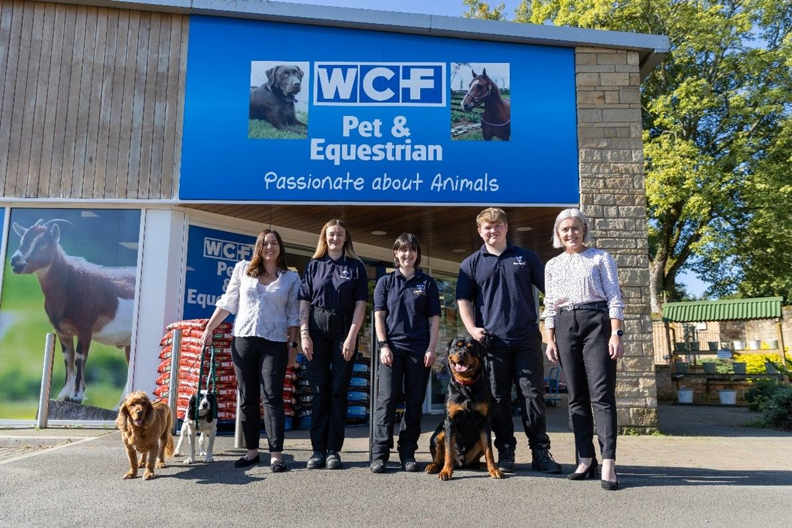
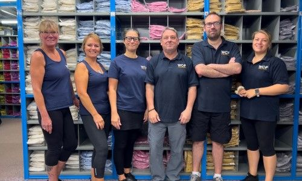
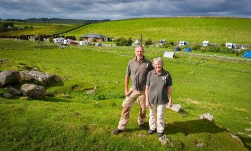

WCF Ltd is officially, a Great Place to Work!
We have some exciting news to share!
As of November 2024, WCF Ltd has officially earned Great Place to Work accreditation, and we couldn’t be more proud. This incredible achievement was made possible thanks to the amazing feedback shared by our teams, with 80% of our employee-owners choosing taking part in the Great Place to Work trust index engagement survey.
What Does This Accreditation Mean?
Becoming a Great Place to Work isn’t just about a fancy badge or recognition; it’s a reflection of the culture we’ve built together with our teams, across our diverse group of businesses, as well as proof that we are living up to our values. It’s a sign that our employee-owners feel valued, supported, and proud to be part of the WCF Ltd family.
We collectively achieved an average rating of 76% across all the Great Place to Work statements, the platform’s in-depth survey that measures trust, pride, camaraderie, community and leadership to name but a few areas. An average rating of 76% across the survey statements is a fantastic result, showing that we’re on the right track but always striving to be even better.

Turning Insight into Action
Now that we’ve achieved this milestone, we’re not stopping there!
The Great Place to Work survey asked our teams to rate statements about their experiences, from leadership support to workplace culture, and opportunities for personal growth. We received invaluable insights into what makes WCF Ltd special and equally, what areas we can collectively focus on improving. While we’re celebrating our highly rated areas, we’re also turning insight into meaningful actions, identifying areas where we can do even more to enhance the experience for our colleagues.
When our employee-owners feel engaged and appreciated, it leads to greater creativity, collaboration, and satisfaction, which ultimately benefits everyone— people, our customers, and the communities in which we operate. As such, our journey to being an even greater place to work continues - the insights from our survey will guide us as we focus on ongoing improvements, ensuring that WCF remains a place where people love to come to work every day.
A Big Thank You
Our accreditation belongs to every single member of the WCF Ltd team. Thank you to all of our employee-owners for sharing their insight and making this achievement possible. Our team’s feedback, enthusiasm, and dedication are what makes our company truly great. We’re proud to have such a passionate and talented people working with us, and we can’t wait to see what we accomplish next, together.
Here’s to many more milestones ahead, and to making WCF an even greater place to work!
Join Our Team
If you’re interested in joining a workplace that values collaboration, trust, and growth, we’d love to hear from you. Check out our careers page for current opportunities and discover how you can be a part of the WCF team.

